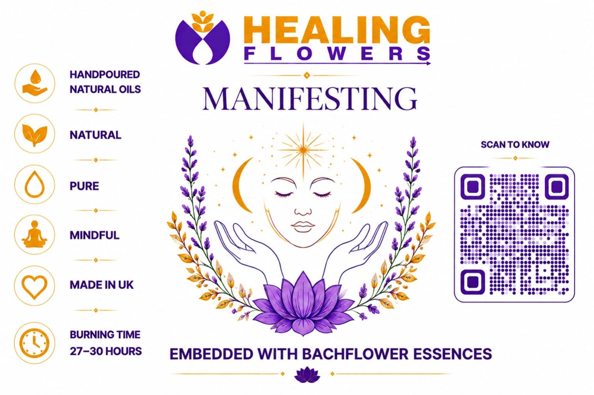

Your moment. Your light.
Healing Flowers Social Booth
Choose your candle, open the camera, and create your Healing Flowers moment inside our floral frame.

Manifesting
Set the intention. Light the moment.
#HealingFlowers

Manifesting
My Healing Flowers Moment
Tap Start Camera and allow camera access.
For Instagram, tap Share. If Instagram does not appear, download the photo and upload it from your gallery.
Privacy: the selfie is composed locally in your browser and is not uploaded by this page.